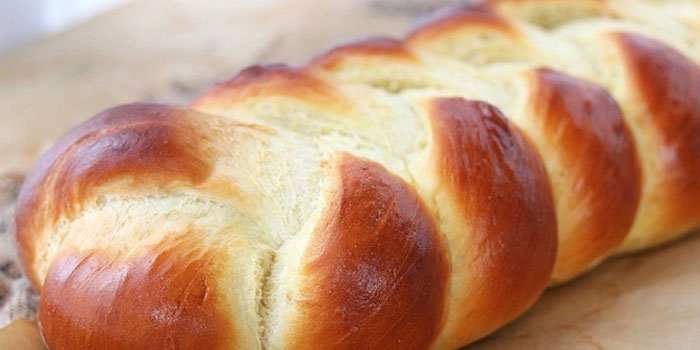

French Bread

Ingredients:
- 2 cups warm water (about 110°F)
- 1 Tablespoon active dry yeast
- 2 teaspoons sugar
- 5-6 cups flour
- 2 teaspoons table salt or fine sea salt
- 1 teaspoon olive oil
Time:
- Prep: 25m
- Cook: 40m
- Ready In: 1h 5m
Directions:
- In a small bowl, combine the warm water, yeast and sugar. Let sit for 5 minutes, or until it has begin to foam.
- Place 2 cups of flour into a large mixing bowl with the salt. Stir in the yeast mixture and begin to knead by hand or using a dough hook and stand mixer. Add 1/2 cup of the remaining flour at a time until the dough is smooth but not sticky. Rub the olive oil around the dough ball and let rest for 15 minutes.
- Turn the dough onto a floured surface and divide it in half. Roll one half into a rectangle. Starting from the long side, roll the dough into a cylinder. Turn both ends in and pinch the seams closed. Round the edges and place onto a baking sheet. Repeat with the second dough ball. Let rise for 30-45 minutes. Make three diagonal cuts across the top of each loaf.
- Preheat the oven to 400°F. Bake for 17-20 minutes or until the tops are golden brown.
- Brush the top with melted butter if desired. Slice and enjoy!